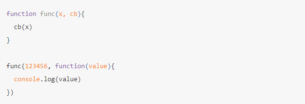
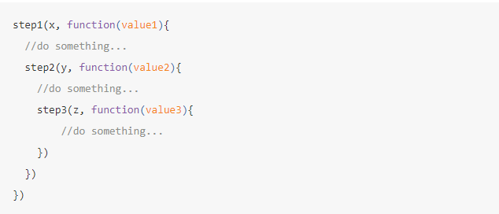

分享人：杨梓雄
目录
1.背景介绍
2.知识剖析
3.常见问题
4.解决方案
5.编码实战
6.扩展思考
7.更多讨论
8.参考文献
英语callback翻译过来称为回调，callback在英文中"call back"两个单词的合体，你应该有听过"call me back"的英文，字面理解就是有客户打来电话给你，可是你正在电话中，客户会留言说请你等会有空时候再"回电"给它，在编程中其实语境是一样的
延续传递风格（continuation-passing style,CPS），它的对比是直接风格(Direct style),这两种是程序开发时所使用的风格，CPS早在1970年代就提出来了.CPS是明确的转移控制权到下一个函数中，也就是使用“延续函数”的方式，一般称它为“回调函数”或者“回调”，回调是一个可以作为传入参数的函数，用于在当前的函数被调用执行最后移交控制权，而不是使用函数返回传值的方式。直接风格的控制权移交是不明确的，它是用的返回值的方式，然后进行到下一段程序编码或者调用其他的函数。 0
CPS风格在这里指的的回调函数有一些明显的缺点：
为什么在JavaScript中会经常见到回调？
异步回调函数：并非所有使用callbacks(回调)函数都是异步执行的，在javasciprt中，除了DOM事件处理中的回调函数大部分都是异步执行的。
要让自己定义的回调函数转变为异步，有以下几种方式
"匿名函数"、"函数定义"、"函数声明"混合在一起
它代表了func函数执行完后要作的下一件事，这个定义事在func函数代码中最后一句被调用执行
所以回调函数的语法可以理解为：在函数调用时，要写出下一个要执行的函数定义，或者说反过来又调用下个执行函数
回调函数的名称，可以用匿名函数替代
回调函数的定义中，传入的参数value的名称叫什么都可以
回调函数有闭包结构特性，可以取到func中传入的参数
回调地狱
参考一：回调
感谢大家观看
杨梓雄